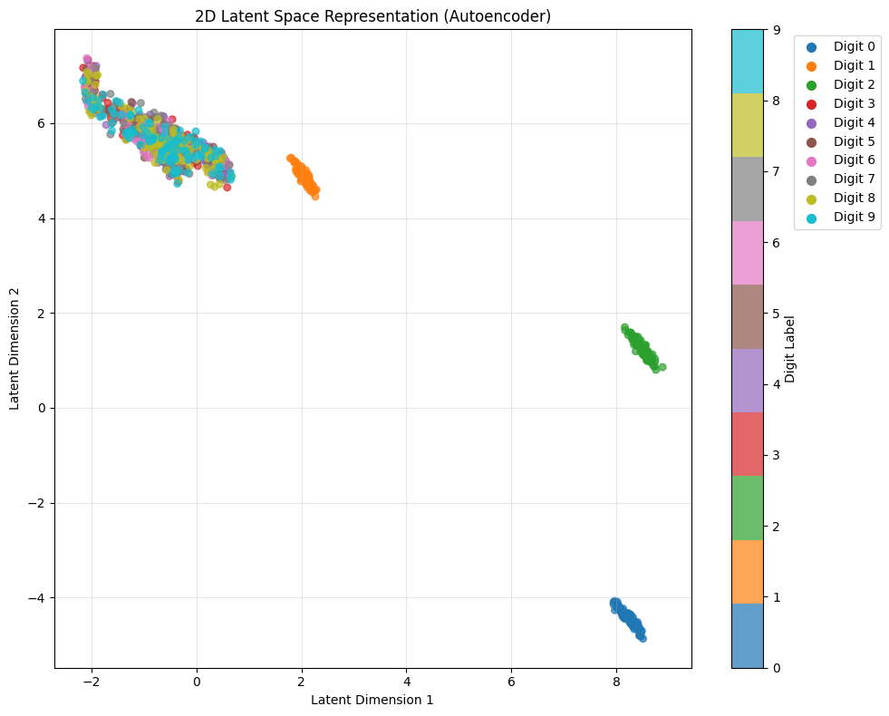
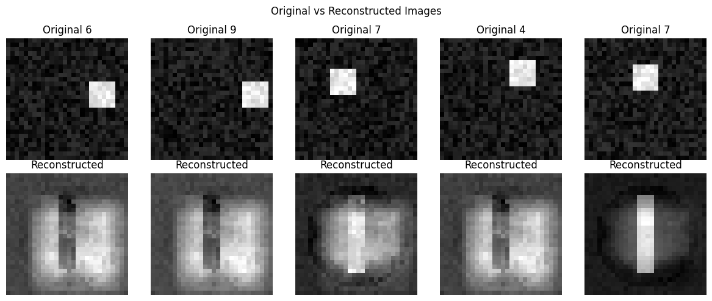

Intiution#
An autoencoder is a neural network that learns to recreate its input. It doesn’t need labels — it’s unsupervised learning.
Its goal:
Compress data → then reconstruct it as accurately as possible.
Architecture#
It has two parts:
Input → Encoder → Latent Space → Decoder → Output
Part |
Purpose |
|---|---|
Encoder |
Compresses input data into a smaller vector (latent representation). |
Latent space (z) |
Captures essential information in fewer dimensions. |
Decoder |
Reconstructs the input from the compressed latent vector. |
Intuition#
Think of a zip file analogy:
The encoder acts like
zip→ compresses the file to a smaller size.The decoder acts like
unzip→ tries to rebuild the original file.
The network is forced to learn what is most important in the data, since the bottleneck (latent space) restricts capacity. → This forces it to capture the underlying structure rather than memorizing pixel-by-pixel details.
Mathematical Workflow#
Input \(x\)
Encoder compresses: $\( z = f_\theta(x) \)\( where \)z$ = latent vector.
Decoder reconstructs: $\( \hat{x} = g_\phi(z) \)$
Training objective minimizes reconstruction loss: $\( L = ||x - \hat{x}||^2 \)$ or sometimes cross-entropy.
Why It Works#
By minimizing the difference between input and output, the model learns a compact internal representation that contains the most meaningful information about the input distribution.
This is useful because:
Redundant/noisy information is removed.
The latent representation generalizes across similar inputs.
Intuitive Example#
Imagine feeding the network handwritten digits (MNIST):
The encoder learns that “6” and “9” differ mainly by rotation.
In latent space, similar digits lie close together.
The decoder learns how to reconstruct those digits.
Applications#
Use Case |
Explanation |
|---|---|
Dimensionality reduction |
Like PCA but nonlinear. |
Denoising |
Train to reconstruct clean data from noisy input. |
Anomaly detection |
Unusual inputs → high reconstruction error. |
Image compression |
Compact latent representation. |
Pretraining |
Encoder weights help initialize other models. |
Visual Intuition#
[784 Inputs]
↓
[256 Neurons]
↓
[64 Neurons] ← Bottleneck (Latent Representation)
↓
[256 Neurons]
↓
[784 Outputs]
The bottleneck acts as a filter.
The network must learn how to represent the input efficiently.
In short:
Autoencoders teach themselves to understand what features of data matter most — by trying to rebuild what they just saw, using fewer numbers to describe it.
Would you like a visual latent space example (e.g., how digits cluster in 2D using an autoencoder)?
# Alternative approach to avoid torchvision import issues
import torch
from torch import nn
import matplotlib.pyplot as plt
import numpy as np
# Create synthetic MNIST-like data to avoid torchvision dependency
def create_synthetic_mnist_data(n_samples=1000):
"""Create synthetic digit-like data patterns"""
np.random.seed(42)
data = []
labels = []
for digit in range(10):
for _ in range(n_samples // 10):
# Create simple patterns for each digit
img = np.random.rand(28, 28) * 0.2 # background noise
# Add digit-specific patterns
if digit == 0: # Circle
center = (14, 14)
for i in range(28):
for j in range(28):
dist = ((i-center[0])**2 + (j-center[1])**2)**0.5
if 8 < dist < 12:
img[i, j] = 0.8 + np.random.rand() * 0.2
elif digit == 1: # Vertical line
img[5:23, 12:16] = 0.8 + np.random.rand(18, 4) * 0.2
elif digit == 2: # Horizontal lines
img[8:12, 4:24] = 0.8 + np.random.rand(4, 20) * 0.2
img[15:19, 4:24] = 0.8 + np.random.rand(4, 20) * 0.2
# Add more patterns for other digits...
else: # Random pattern for other digits
x, y = np.random.randint(5, 23, 2)
img[x:x+6, y:y+6] = 0.8 + np.random.rand(6, 6) * 0.2
data.append(img.flatten())
labels.append(digit)
return np.array(data, dtype=np.float32), np.array(labels)
# --------------------------
# 1. Define a simple Autoencoder
# --------------------------
class Autoencoder2D(nn.Module):
def __init__(self):
super().__init__()
self.encoder = nn.Sequential(
nn.Linear(784, 128),
nn.ReLU(),
nn.Linear(128, 64),
nn.ReLU(),
nn.Linear(64, 2) # <-- 2D latent space
)
self.decoder = nn.Sequential(
nn.Linear(2, 64),
nn.ReLU(),
nn.Linear(64, 128),
nn.ReLU(),
nn.Linear(128, 784),
nn.Sigmoid()
)
def forward(self, x):
z = self.encoder(x)
out = self.decoder(z)
return out, z
# --------------------------
# 2. Create synthetic dataset
# --------------------------
print("Creating synthetic dataset...")
train_data, train_labels = create_synthetic_mnist_data(5000)
test_data, test_labels = create_synthetic_mnist_data(1000)
# Convert to tensors
train_tensor = torch.tensor(train_data)
test_tensor = torch.tensor(test_data)
test_labels_tensor = torch.tensor(test_labels)
# Create data loader
from torch.utils.data import TensorDataset, DataLoader
train_dataset = TensorDataset(train_tensor)
train_loader = DataLoader(train_dataset, batch_size=256, shuffle=True)
# --------------------------
# 3. Initialize model, loss, optimizer
# --------------------------
device = torch.device("cuda" if torch.cuda.is_available() else "cpu")
print(f"Using device: {device}")
model = Autoencoder2D().to(device)
criterion = nn.MSELoss()
optimizer = torch.optim.Adam(model.parameters(), lr=1e-3)
# --------------------------
# 4. Train for a few epochs
# --------------------------
print("Starting training...")
for epoch in range(10):
total_loss = 0
for batch_idx, (x,) in enumerate(train_loader):
x = x.to(device)
output, _ = model(x)
loss = criterion(output, x)
optimizer.zero_grad()
loss.backward()
optimizer.step()
total_loss += loss.item()
avg_loss = total_loss / len(train_loader)
print(f"Epoch {epoch+1}/10, Average Loss: {avg_loss:.4f}")
# --------------------------
# 5. Visualize latent space
# --------------------------
print("Generating latent space visualization...")
model.eval()
with torch.no_grad():
test_tensor_device = test_tensor.to(device)
_, z = model(test_tensor_device)
z = z.cpu().numpy()
# Create the plot
plt.figure(figsize=(10, 8))
scatter = plt.scatter(z[:, 0], z[:, 1], c=test_labels, cmap='tab10', s=30, alpha=0.7)
plt.colorbar(scatter, label='Digit Label')
plt.title("2D Latent Space Representation (Autoencoder)")
plt.xlabel("Latent Dimension 1")
plt.ylabel("Latent Dimension 2")
plt.grid(True, alpha=0.3)
# Add digit labels as legend
for i in range(10):
mask = test_labels == i
if np.any(mask):
plt.scatter([], [], c=plt.cm.tab10(i/9), label=f'Digit {i}', s=50)
plt.legend(bbox_to_anchor=(1.15, 1), loc='upper left')
plt.tight_layout()
plt.show()
# --------------------------
# 6. Visualize some reconstructions
# --------------------------
print("Visualizing reconstructions...")
with torch.no_grad():
sample_indices = np.random.choice(len(test_data), 5, replace=False)
sample_data = test_tensor[sample_indices].to(device)
reconstructed, _ = model(sample_data)
sample_data = sample_data.cpu().numpy()
reconstructed = reconstructed.cpu().numpy()
fig, axes = plt.subplots(2, 5, figsize=(12, 5))
for i in range(5):
# Original
axes[0, i].imshow(sample_data[i].reshape(28, 28), cmap='gray')
axes[0, i].set_title(f'Original {test_labels[sample_indices[i]]}')
axes[0, i].axis('off')
# Reconstructed
axes[1, i].imshow(reconstructed[i].reshape(28, 28), cmap='gray')
axes[1, i].set_title('Reconstructed')
axes[1, i].axis('off')
plt.suptitle('Original vs Reconstructed Images')
plt.tight_layout()
plt.show()
print("Autoencoder training and visualization completed!")
Creating synthetic dataset...
Using device: cpu
Using device: cpu
Starting training...
Starting training...
Epoch 1/10, Average Loss: 0.1228
Epoch 2/10, Average Loss: 0.0645
Epoch 1/10, Average Loss: 0.1228
Epoch 2/10, Average Loss: 0.0645
Epoch 3/10, Average Loss: 0.0513
Epoch 3/10, Average Loss: 0.0513
Epoch 4/10, Average Loss: 0.0425
Epoch 4/10, Average Loss: 0.0425
Epoch 5/10, Average Loss: 0.0346
Epoch 5/10, Average Loss: 0.0346
Epoch 6/10, Average Loss: 0.0298
Epoch 6/10, Average Loss: 0.0298
Epoch 7/10, Average Loss: 0.0262
Epoch 7/10, Average Loss: 0.0262
Epoch 8/10, Average Loss: 0.0246
Epoch 8/10, Average Loss: 0.0246
Epoch 9/10, Average Loss: 0.0228
Epoch 9/10, Average Loss: 0.0228
Epoch 10/10, Average Loss: 0.0217
Generating latent space visualization...
Epoch 10/10, Average Loss: 0.0217
Generating latent space visualization...
C:\Users\sangouda\AppData\Local\Temp\ipykernel_63448\140626826.py:140: UserWarning: *c* argument looks like a single numeric RGB or RGBA sequence, which should be avoided as value-mapping will have precedence in case its length matches with *x* & *y*. Please use the *color* keyword-argument or provide a 2D array with a single row if you intend to specify the same RGB or RGBA value for all points.
plt.scatter([], [], c=plt.cm.tab10(i/9), label=f'Digit {i}', s=50)

Visualizing reconstructions...

Autoencoder training and visualization completed!